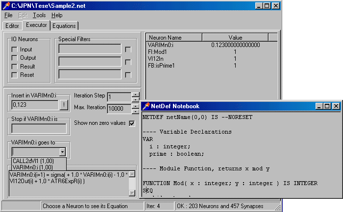

| The NETDEF compiler and simulator (Windows™ only) [~350k] | |
| The NETDEF helpfile [~100k] | |
| Symbolic Processing in Neural Networks, Journal of Brazilian Computer Science, 8(3), 58-70, 2003. Download it in gziped postscript or pdf format. |
NETDEF
A Neural Language
What is it?
NETDEF (Network Definition) is a high level parallel language used to define complex algorithms. It was based on the Occam language, having processes (a modular flow of execution) and channels (unidirectional point-to-point communication of values) as its main concepts. NETDEF has the usual control structures and operators, and has also specific processes aiming some neural networks distinct features.
In this webpage, it is available a NETDEF compiler and simulator, in order to program and test the potentialities of this approach (for Windows™ only). If you have some questions or suggestions please email me.
Here is a sample image of the compiler. It was programmed in Borland's Delphi™ 4 environment system.

Fig. 1: Using the NETDEF compiler
The compiler takes a NETDEF program, compiles it and give a neural network text description. E.g., the program:
- NETDEF netName(0,0) IS
VAR
i : integer;
c1 : channel;- SEQ
SEND i TO c1;
ENDSEQ;- ENDDEF.
is compiled into the following network:
- Mn0In(i+1) = sigma( )
- Mn0Out(i+1) = sigma( + 1,0 * SEQ1Out(i) )
- VARIMn0:i(i+1) = sigma( + 1,0 * VARIMn0:i(i) )
- VARCMn0:c1(i+1) = sigma( + 1,0 * VARCMn0:c1(i) + 1,0 * SEND1Val(i) )
- VARCMn0:c1Flg(i+1) = sigma( + 1,0 * Mn0In(i) + 1,0 * VARCMn0:c1Flg(i)
- - 1,0 * SEND1Flg(i) )
- SEQ1In(i+1) = sigma( + 1,0 * Mn0In(i) )
- SEQ1Out(i+1) = sigma( + 1,0 * SEND1Out(i) )
- SEND1In(i+1) = sigma( + 1,0 * SEQ1In(i) + 1,0 * SEND1In(i)
- - 1,0 * SEND1Wait(i) )
- SEND1Out(i+1) = sigma( + 1,0 * SEND1Wait(i) )
- SEND1Wait(i+1) = sigma( + 2,0 * VARCMn0:c1Flg(i) + 1,0 * SEND1In(i)
- - 1,0 * SEND1Wait(i) - 2,0 )
- SEND1Flg(i+1) = sigma( + 1,0 * SEND1Wait(i) )
- SEND1Val(i+1) = sigma( + 1,0 * VARIMn0:i(i) + 1,0 * SEND1Wait(i) - 1,0 )
This text describes a neural network that executes the algorithm defined by the NETDEF program above.
Why NETDEF?
There are many scientific and commercial approaches in the neurocomputing field. Check links section for some examples.
NETDEF is a first step to create a general purpose language for neural network hardware. NETDEF relevant feature is that it gives an automatic mechanism to translate complex algorithms into neural networks descriptions.
Here lies the main difference in NETDEF: it can describe any procedure, not just learning algorithms, and map them into a neural net text description. This description then, is used in some appropriate neural hardware machine where the desired algorithm can be executed, and not just on a von Neumann machine.
| The NETDEF compiler and simulator (Windows™ only) [~350k] | |
| The NETDEF helpfile [~100k] | |
| Symbolic Processing in Neural Networks, Journal of Brazilian Computer Science, 8(3), 58-70, 2003. Download it in gziped postscript or pdf format. |
Software
AXON - A neurosoftware language, built on a certain neural network model, able to describe complex networks in order to simulate them on a personal computer. For a list of NN simulation tools check here. |
|
GENESIS - an elaborate neural circuit language simulator. |
|
NeuronC - A neural circuit simulation language to construct a realistic biophysically-based model of a neural circuit and simulate a physiology experiment on it. |
|
NN Toolbox - A comprehensive environment for neural network research, design, and simulation within MATLAB™. |
Hardware
| Siemens MA-16 chip neurocomputer family. It is possible to describe complex learning algorithms using a programming language named nAPL. The actual version is SYNAPSE-3™. Description: "The Siemen's MA-16 chip is a fast matrix-matrix multiplier that can be combined to form systolic arrays, i.e. inputs and outputs are passed from one module to another in an assembly line manner. A single module can process 4 patterns, of 16 elements each (16-bit), with 16 neuron values (16-bit) at a rate of 800 multiply/accumulates/sec at 50Mhz. Weights are loaded from off-chip RAM and neuron transfer functions are calculated with off-chip look-up-tables." |
Information about Microprocessor NeuroMatrix® NM6403, designed by RC "Module" at 1997/8. Description: "NM6403 is a high performance microprocessor with super scalar architecture. The architecture includes control unit, address calculation, and scalar processing units, node to support vector operations with elements of variable bit length. There are two identical programmable interfaces to work with any memory types as well as two communication ports hardware compatible with those of DSP MS320C4x which permit to build multi-processor systems..." |
January 2005